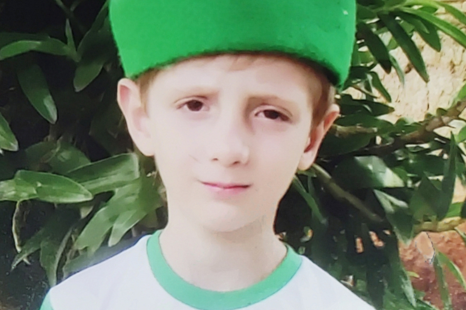
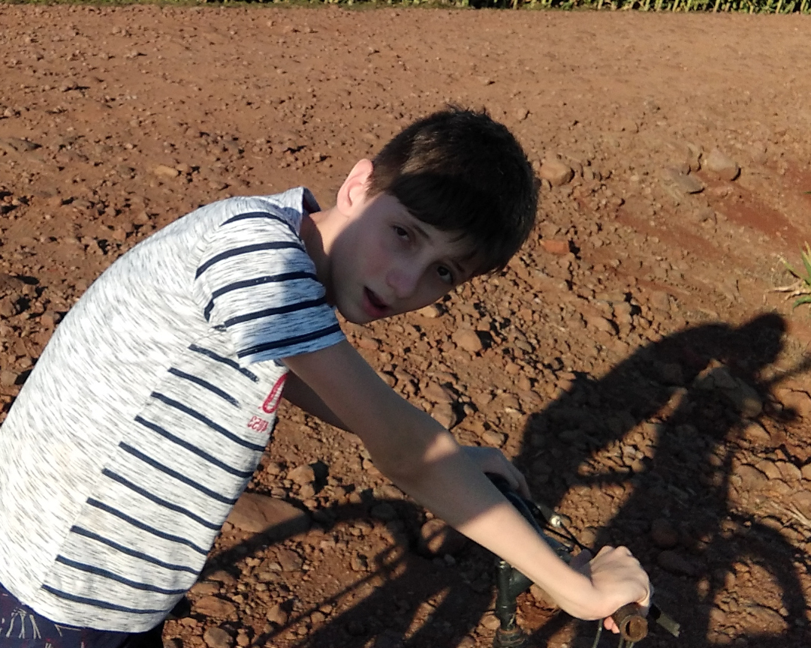
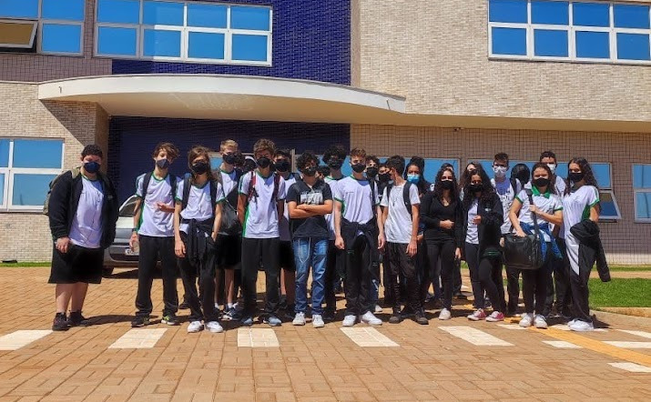
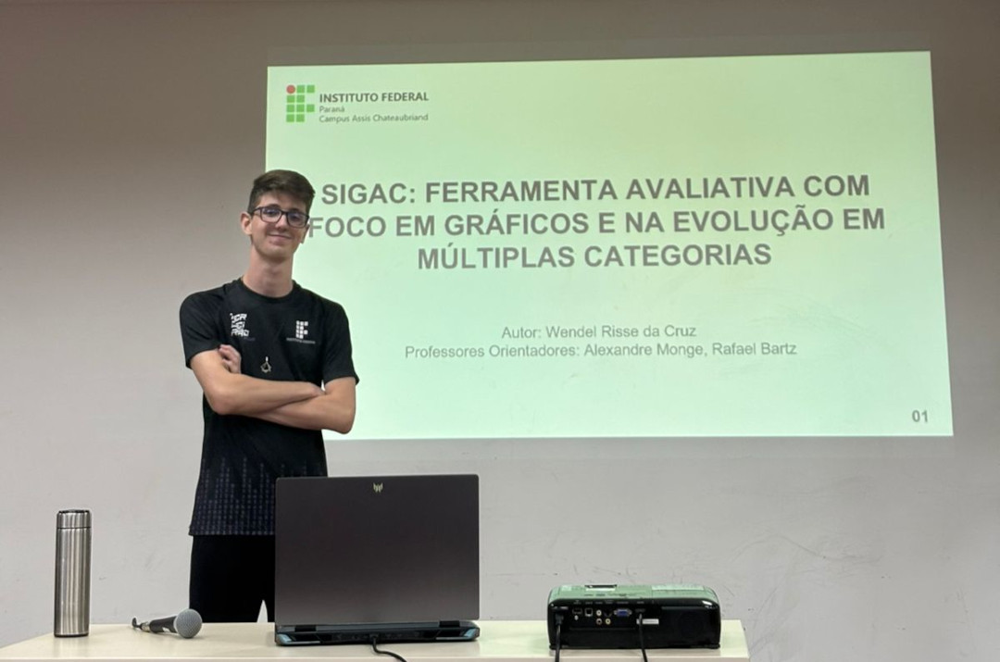

Biografia

Infância e escola
Crescido em Concórdia do Oeste com ótimos professores, e muito energia para distribuir.

Pré-Adolescência e descobertas
Em meio a pandemia, teve a sua pré-adolescência, tudo estava diferente, e acima de tudo, ele estava.

IFPR e novas experiências
Entrou no IFPR-Biopark, enfrentou desafios e viveu momentos únicos com colegas.

Projeto SIGAC e conclusão
Finalização do Ensino Médio e entrega do projeto integrador